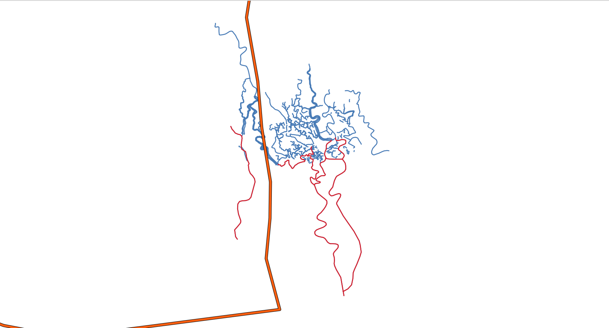

5. Sustainable Cities and Communities¶
Sustainable Cities and Communities is the 11th Sustainable Development Goal which aspires to make cities inclusive, safe, resilient and sustainable.The world is becoming increasingly urbanized. Since 2007, more than half the world’s population has been living in cities. This makes it very important for the cities to remain alert when there is a chance of disaster like floods. Local administration should know if their city is going to get affected by the rains which happen in their proximity so that they can raise an alert amongst the citizens. This exercise will solve one of such problems.

5.1. Problem: City getting affected by rain or not¶
Problem Statement
To determine the areas where if it rains will affect a city/town

Core Idea
If it rains in vicinity of a river connecting the city, the city will get affected by the rains.
Approach
Choose a city
Get the Rivers (Edges)
Create river components
Create a Buffer around the city
Finding the components intersecting the buffer
Finding the rain zones
5.2. Choose a city¶
For this exercise, Munshigang city from Bangladesh is chosen. This city has multiple rivers in its proximity which makes it an apt location to demonstrate this exercise. The exercise will try to find the areas, where if it rains the city will be affected. To define the location of this city and use it in for further steps, create a table to store the name along with latitude and longitude values of City’s location. This stores the city as a point.
5.2.1. Exercise 1: Create a point for the city¶
Create a table for the cities
CREATE TABLE bangladesh (
id BIGINT,
name TEXT,
geom geometry,
city_buffer geometry
);
CREATE TABLE
Insert Munshigang
INSERT INTO bangladesh(id, name, geom) VALUES
(5, 'Munshigang', ST_SetSRID(ST_Point(89.1967, 22.2675), 4326));
INSERT 0 1
Simulate the city region with a buffer
UPDATE bangladesh
SET city_buffer = ST_Buffer((geom),0.005)
WHERE name = 'Munshigang';
UPDATE 1
See description of the table
\dS+ bangladesh
Table "public.bangladesh"
Column | Type | Collation | Nullable | Default | Storage | Compression | Stats target | Description
-------------+----------+-----------+----------+---------+----------+-------------+--------------+-------------
id | bigint | | | | plain | | |
name | text | | | | extended | | |
geom | geometry | | | | main | | |
city_buffer | geometry | | | | main | | |
Access method: heap
Latitude and longitude values are converted into geometry form using ST_Point
which returns a point with the given X and Y coordinate values. ST_SetSRID is used
to set the SRID (Spatial Reference Identifier) on the point geometry to 4326.
5.3. Prepare the database¶
Data obtained in Data for Sustainable Development Goals.
This section will cover the status of the database in order to get the same results when processing the queries.
5.3.1. Exercise 2: Set the search path¶
First step in pre processing is to set the search path for Waterways
data. Search path is a list of schemas that helps the system determine how a
particular table is to be imported.
SET search_path TO waterways,public;
SHOW search_path;
SET
search_path
-------------------
waterways, public
(1 row)
5.3.2. Exercise 3: Verify database configuration¶
As part of the every project tasks: inspect the database structure.
Get the extensions that are installed
\dx
List of installed extensions
Name | Version | Schema | Description
-----------+---------+------------+------------------------------------------------------------
hstore | 1.8 | public | data type for storing sets of (key, value) pairs
pgrouting | 3.8.0 | public | pgRouting Extension
plpgsql | 1.0 | pg_catalog | PL/pgSQL procedural language
postgis | 3.6.0 | public | PostGIS geometry and geography spatial types and functions
(4 rows)
List installed tables
\dt
List of relations
Schema | Name | Type | Owner
-----------+-----------------------------+-------+--------
public | bangladesh | table | runner
public | spatial_ref_sys | table | runner
waterways | configuration | table | user
waterways | waterways_pointsofinterest | table | user
waterways | waterways_ways | table | user
waterways | waterways_ways_vertices_pgr | table | user
(6 rows)
5.3.2.1. Exercise 4: Count the number of Waterways¶
The importance of counting the information on this workshop is to make sure that the same data is used and consequently the results are same. Also, some of the rows can be seen to understand the structure of the table and how the data is stored in it.
SELECT count(*) FROM waterways_ways;
count
-------
815
(1 row)
5.4. Processing waterways data¶
This section will work the graph that is going to be used for processing. While building the graph, the data has to be inspected to determine if there is any invalid data. This is a very important step to make sure that the data is of required quality. pgRouting can also be used to do some Data Adjustments.
5.4.1. Exercise 5: Remove waterways not for the problem¶
This exercise focusses only the areas in the mainland, where if it rains the city is
affected. Hence, the rivers which are there in the swamp area wich is in a lower
altitude of the city, are to be removed from the waterways_ways table.
Remove swamp rivers
DELETE FROM waterways_ways
WHERE osm_id
IN (721133202, 908102930, 749173392, 652172284, 126774195, 720395312);
DELETE 31
Note
When working for many cities, a better approach might be to create views.
Also delete a boundary tagged as waterway
DELETE FROM waterways_ways WHERE osm_id = 815893446;
DELETE 1
Note
A better approach might be to fix the original data in OSM website.
5.5. Exercise 6: Get the Connected Components of Waterways¶
As the rivers in the data are not having single edge, i.e, multiple edges make up
a river, it is important to find out the connected edges and store the information
in the waterways_ways table. This will help us to identify which edges belong to
a river. First, the connected components are found and then stored in a new column
named component.
The pgRouting function pgr_connectedComponents is used to complete this task
and its explaind with more detail in Graph views.
A sub-query is created to find out all the connected components. After that,
the component column is updated using the results obtained from the sub-query.
This helps in storing the component id in the waterways_ways_vertices_pgr table.
Next query uses this output and stores the component id in the waterways_ways
(edges) table. Follow the steps given below to complete this task.
Create a vertices table.
SELECT * INTO waterways.waterways_vertices
FROM pgr_extractVertices(
'SELECT gid AS id, source, target
FROM waterways.waterways_ways ORDER BY id');
SELECT 777
Fill up the x, y and geom columns.
UPDATE waterways_vertices SET geom = ST_startPoint(the_geom)
FROM waterways_ways WHERE source = id;
UPDATE waterways_vertices SET geom = ST_endPoint(the_geom)
FROM waterways_ways WHERE geom IS NULL AND target = id;
UPDATE waterways_vertices set (x,y) = (ST_X(geom), ST_Y(geom));
UPDATE 656
UPDATE 121
UPDATE 777
Add a component column on the edges and vertices tables.
ALTER TABLE waterways_ways ADD COLUMN component BIGINT;
ALTER TABLE waterways_vertices ADD COLUMN component BIGINT;
ALTER TABLE
ALTER TABLE
Fill up the component column on the vertices table.
UPDATE waterways_vertices SET component = c.component
FROM (
SELECT * FROM pgr_connectedComponents(
'SELECT gid as id, source, target, cost, reverse_cost FROM waterways_ways')
) AS c
WHERE id = node;
UPDATE 777
Fill up the component column on the edges table.
UPDATE waterways_ways SET component = v.component
FROM (SELECT id, component FROM waterways_vertices) AS v
WHERE source = v.id;
5.5.1. Exercise 7: Creating a function that gets the city buffer¶
A function can be created for the same task. This will be help when the table has more than one city.
CREATE OR REPLACE FUNCTION get_city_buffer(city_id INTEGER)
RETURNS geometry AS
$BODY$
SELECT city_buffer FROM bangladesh WHERE id = city_id;
$BODY$
LANGUAGE SQL;
CREATE FUNCTION
5.6. Exercise 8: Finding the components intersecting the buffer¶
Next step is to find the components of waterways which lie in the buffer zone of
the city. These are the waterways which will affect the city when it rains around
them. This is done using ST_Intersects. Note that get_city_buffer function
is used in the query below.
1SELECT DISTINCT component
2FROM bangladesh JOIN waterways.waterways_ways
3ON (ST_Intersects(the_geom, get_city_buffer(5)));
component
-----------
8
57
62
(3 rows)
Output shows the distinct component numbers which lie in the buffer zone of the city. That is, the rivers that lie within the city.
5.7. Exercise 9: Get the rain zones¶
In this excercise the area , where if it rains, the
city would be affected, is calculated. This area is called rain zone in the excercise
Create a Buffer around the river components.
Add columns named
rain_zonein waterways_waysTo store buffer geometry of the rain zones.
Find the buffer for every edge that intersects the city buffer area using
ST_Bufferand update the
rain_zonecolumn.
Adding column to store Buffer geometry
ALTER TABLE waterways_ways
ADD COLUMN rain_zone geometry;
ALTER TABLE
Storing Buffer geometry
UPDATE waterways.waterways_ways
SET rain_zone = ST_Buffer((the_geom),0.005)
WHERE ST_Intersects(the_geom, get_city_buffer(5));
UPDATE 5
This will give us the requires area, where if it rains, the city will be affected.
5.8. Exercise 10: Create a union of rain zones¶
Multiple polygons that are obtained can also be merged using ST_Union. This
will give a single polygon as the output.
When it rains in the vicinity, the city will get affected by the rain.
-- Combining mutliple rain zones
SELECT ST_Union(rain_zone) AS Combined_Rain_Zone
FROM waterways_ways;
combined_rain_zone
--------------------------------------------------------------------------------------------------------------------------------------------------------------------------------------------------------------------------------------------------------------------------------------------------------------------------------------------------------------------------------------------------------------------------------------------------------------------------------------------------------------------------------------------------------------------------------------------------------------------------------------------------------------------------------------------------------------------------------------------------------------------------------------------------------------------------------------------------------------------------------------------------------------------------------------------------------------------------------------------------------------------------------------------------------------------------------------------------------------------------------------------------------------------------------------------------------------------------------------------------------------------------------------------------------------------------------------------------------------------------------------------------------------------------------------------------------------------------------------------------------------------------------------------------------------------------------------------------------------------------------------------------------------------------------------------------------------------------------------------------------------------------------------------------------------------------------------------------------------------------------------------------------------------------------------------------------------------------------------------------------------------------------------------------------------------------------------------------------------------------------------------------------------------------------------------------------------------------------------------------------------------------------------------------------------------------------------------------------------------------------------------------------------------------------------------------------------------------------------------------------------------------------------------------------------------------------------------------------------------------------------------------------------------------------------------------------------------------------------------------------------------------------------------------------------------------------------------------------------------------------------------------------------------------------------------------------------------------------------------------------------------------------------------------------------------------------------------------------------------------------------------------------------------------------------------------------------------------------------------------------------------------------------------------------------------------------------------------------------------------------------------------------------------------------------------------------------------------------------------------------------------------------------------------------------------------------------------------------------------------------------------------------------------------------------------------------------------------------------------------------------------------------------------------------------------------------------------------------------------------------------------------------------------------------------------------------------------------------------------------------------------------------------------------------------------------------------------------------------------------------------------------------------------
0103000020E6100000010000007C0000005DC25946634C56408ABF87BDBD423640C1A237A6584C5640303DDDE7ED423640249BBB93504C56408102F66F25433640F39C4F5E4B4C56401601813362433640BDC63139494C56409AC7B3DCA1433640FB447C394A4C5640E98843F9E14336400968C5394A4C564015E594FDE14336405F1DD849404C56403A5577EED7433640ACA22AF92F4C564083775044CE433640D1D14BCE164C5640F1C9219DC94336400CF50F290A4C56405E7E1330CB433640F3418FC4F44B5640AC581E80D4433640E509D39DEE4B5640C765B120D8433640CA514196DF4B56404EC10A56E3433640066B34B9D04B5640610AF3DFEA4336402FC1DF4DC54B564085CAD719ED433640C9591B3ABF4B5640F1E5EA48EE43364011DAB3B9AA4B56401E9B1316E9433640BE268DB4A24B564099AAB1BFE4433640AC3A89729B4B564051CAA489DE433640C9676CB4874B5640BA0527F0C74336401D40D2D86E4B5640F5AA9FCDA743364014C5557C604B564048EB3A3E924336401B7C4CF8504B56404624C5AC814336407E94B7F1404B5640EA8B6E887D43364041FE3F06314B56408EACF6F9854336402BE983D2214B564021834CAE9A433640B4F811EC134B564006B3BFD9BA43364084EEA9DB074B5640F666D43FE54336405A56FB17FE4A5640FADC6C3F18443640ABE61501F74A564095F6D0E251443640EB74B8DCF24A5640761AF6F28F443640D4CEA2D3F14A5640EBB8490DD0443640FDD604F0F34A5640DF1128BB0F453640A24C1A1DF94A56403866188A4C4536409B18F727014B56401328E0238445364097457CC10B4B5640D4508065B445364018636281184B56407BB13A74DB4536407E693BEA264B56403670D0CFF7453640343BE10E374B56402A58070C104636405459A9A63A4B56400C80311015463640C281CAA3564B5640BDF1E43E3946364078E51B4B594B564073FD897A3C463640F5CA020C714B5640D1EB67AB57463640B85E8172764B564048DC8A105D463640A6DC2B7D834B56407ECAB339684636407F5FBFA6894B564018D4AA856C463640EFA1E0A8974B5640430C1D19744636402951FB739D4B5640218571657646364062D98771B94B56406B7A6A7E7D4636409400739CC24B5640490E28C37D463640358E8546CD4B5640AF9751AF7B463640752D47DEDB4B564073A90BD7784636405D4B742FE24B5640717C28A0764636403B00E98FF64B5640BE24644A6C463640E5FE8A45FB4B56405FEEBE57694636408B333996094C56408A85C9AA5E46364028093C94154C56408EFB5772594636402DD4F420204C5640FED3A9655B463640F01C7BFF234C564029EF54505F46364060D541A42D4C5640C6ACEE726B46364038A83343404C5640D1063783864636407C91432C444C564062D10EC18B463640F1E3EC4F554C5640B6CDEED2A046364056D33CEC574C564026C237D8A34636406B23E593674C56403BC78CD6B4463640CB6FC0B6784C5640ECFC01D2BF46364068083B0B8A4C5640D239E01DBC4636401329E60B8E4C5640D902888AB9463640EE58623E9D4C5640D0F651A9A9463640D6996367AB4C56403533C3788E463640A35FA501B84C56406FA6C0F868463640B115469BB94C5640CDE9CF2D63463640FEDD7DE9BA4C564001298A6D60463640D2EE2B65BF4C56406C47E19954463640060C5C59C34C56408751C0984B463640FECDFD33CD4C564065D752343146364061FA2B1DD14C56404EEE67002546364042FC43BFDC4C5640A8D0CEB7F8453640379138FFE54C56402FDB0C35C4453640CFED0982EC4C5640AC0CBB7C89453640D205AA07F04C5640366688D04A453640B3F8C816F04C564075054D4641453640ADC20E1FF44C564009C0211D39453640A1783163FA4C564095CBB6B83F453640EE5D946A0A4D5640BF8101AA43453640DEA158541A4D564016D8C7053B45364054CFF083294D5640D3890D21264536401EFEF663374D56408C085FC905453640C097EA6B434D56409B4FEB3CDB4436401B3E6F254D4D5640349F491EA84436407C38D930544D56407C6A63646E443640A5A7DA48584D5640FDB920473044364030552D45594D5640C7249529F0433640C5EA1E1C574D564007158482B0433640F0E231EB554D56409B1855719C4336406FB56626504D56408BED70085B433640B04D9011474D56409DC508F21F4336408DDF41EC434D56409FE8DCA30F4336403A7F09153B4D5640A3D8D3B8E84236404163826B394D564059E12B6DE3423640223BE9713A4D56404CCC6847CE42364076D4BABE3B4D56404370292C794236402F6D104D3B4D5640142EC2A35F4236409B072C9F384D5640DB07B14D20423640453BA8E7324D5640C2BF6A46E441364073FFC25E2A4D5640EB9A7DDCAD413640F33073581F4D564031543B277F413640FF882E41124D564052AC26F259413640D197BE99034D5640B5C64AAB3F4136402DC44DF2F34C5640910C2A55314136408E00DDE4E34C5640E7F9CE7C2F41364000B7580FD44C5640389060343A413640F924870DC54C564091C16F1251413640C4DB0B73B74C5640D7B0043673413640154ABBC5AB4C5640D6EA434F9F4136401D207678A24C5640A98A56ACD341364030D41C0D9C4C56406499C0F30C423640F5D774EB904C564041E0C04F29423640F15AF7E28B4C5640153E3F9C39423640E251EE19814C5640FFDB62A963423640323E840C7D4C5640CECF25AB764236405F7A990B704C56403494CECA964236405DC25946634C56408ABF87BDBD423640
(1 row)